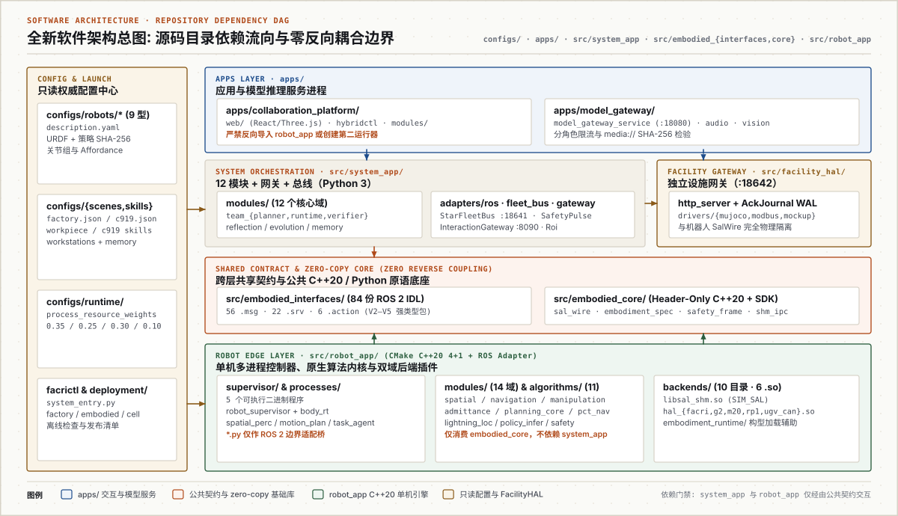

本页以当前工作树实际目录为依据，建立从顶层源码目录到系统编排模块与端侧
C++20
多进程二进制的映射关系，帮助开发者快速定位功能归属与跨层边界。

顶层工作区源码总览
| 顶层目录 | 语言与构建栈 | 运行进程形态 | 核心职责范围 |
|---|---|---|---|
apps/collaboration_platform/ |
TypeScript 与 Python FastAPI | 前端静态资源与只读展示服务 | 三维只读视口、17+ 个操作诊断面板与只读回放代理 |
apps/model_gateway/ |
Python FastAPI 与异步推理工作进程 | 独立模型推理网关进程 | 文本、语音与视觉模型并发上限控制、鉴权与摘要校验 |
src/system_app/ |
Python 3、rclpy、FastAPI 与 SQLite |
系统节点、交互网关与车队总线 | 12 大规划、运行时、核验、记忆与离线演化模块 |
src/facility_hal/ |
Python 3 FastAPI 与预写日志 | 独立工装设施网关进程 | 仿真物理设备、Modbus PLC 与展陈模拟驱动统一控制 |
src/embodied_core/ |
C++20 头文件库与 Python 映射 |
跨层编译与运行期共享基础库 | 具身规格载荷、定长共享内存线协议、安全帧与无锁原语 |
src/robot_app/ |
C++20 CMake 与 Python 边界包装 |
4+1 实时多进程与 6 个 .so 插件 |
守护监管、4 个孤立子进程、核心导航操作算法与 ROS 适配 |
src/embodied_interfaces/ |
ROS 2 IDL 接口包 | 编译期接口定义（共 84 份契约） | 跨节点强类型话题、服务与动作消息定义 |
configs/ |
YAML 与 JSON | 只读声明式配置中心 | 9 类机器人本体描述、双场景清单、技能契约与算力权重 |
deployment/ 与 facrictl |
Shell 与 Python CLI | 宿主机统一控制入口 | 容器装配、发布清单制备、零步预检与会话生命周期控制 |
系统层与端侧 4+1
运行拓扑
系统层以 src/system_app/
为核心，由动态规划、任务图执行、独立谓词核验、记忆与离线反思等 12
个模块配合车队总线与交互网关运转（架构详述见系统智能体与受约束离线演化）。单机端侧则编译为
1 个守护主进程与 4 个按实时优先级隔离的 C++20
工作进程，并按需加载 6 个硬件或仿真动态库插件（进程与线程机制见单机 C++20 4+1
多进程实时架构及 HAL
硬件抽象层与 SalWire v2 协议）。

展开 SystemApp 十二大核心模块清单
| 目录路径 | 核心类与职责定位 | 上下游接口边界 |
|---|---|---|
src/system_app/modules/team_planner/ |
DynamicCapabilityPlanner：融合能力档案、记忆与设备状态编译规划 |
产出澄清请求、宏技能或任务图，提供 /system/compile_plan
编译入口 |
src/system_app/modules/team_runtime/ |
TeamRuntime：任务图节点推进、依赖检查、派发与回执归集 |
经 /system/execute_assignment
与车队总线协调机器人及工装进度 |
src/system_app/modules/team_verifier/ |
TeamVerifier：执行与观测来源匹配、多臂归属、地图与持股守恒校验 |
返回 SATISFIED、UNSATISFIED 或
UNKNOWN，拦截虚假完成 |
src/system_app/modules/reflection_engine/ |
ReflectionEngine：消费真实失败包并剖析根因（仅限离线诊断） |
连接证据仓与演化管理器，不直接写入在线控制路径 |
src/system_app/modules/evolution_manager/ |
EvolutionManager：管理离线候选生成、沙箱对照验证、采纳与回滚 |
服务平台离线演化工作区并受门禁审查 |
src/system_app/modules/equipment_runtime/ |
设施运行客户端：将抽象工装动作分派至网关并追踪异步完成状态 | 经 18642 端口 HTTP 与 Bearer 鉴权调用工业外设或地勤设施 |
src/system_app/modules/capability_registry/ |
SkillCatalog：预载技能契约模板、前置条件与参数校验 |
为规划器与前端技能库视图提供只读权威目录 |
src/system_app/modules/knowledge_memory/ |
基于 SQLite/FTS5 的分层记忆库（空间标注、流程、经历与知识表） | 导入场景静态知识种子包并支撑混合语义规划检索 |
src/system_app/modules/context_store/ |
单机上下文快照存储：维护在线机器人状态、能力与坐标参考快照 | 供编译器端点与协作视图读取原子快照 |
src/system_app/modules/evidence_store/ |
结构化审计证据仓：归集步骤进展、失败样本与运行摘要 | 为离线反思与历史复查留存完整证据记录 |
src/system_app/modules/config_manager/ |
运行时规划与系统配置参数管理与读取接口 | 对接交互网关 /configuration 路由 |
src/system_app/modules/interaction_runtime/ |
语音 VAD/ASR/TTS 对话意图解析、短时记忆与实时 SSE 推送 | 通过 8088 端口控制台与 8090 端口网关承接人机多轮协作指令 |
展开单机 4+1 进程入口、六大 HAL 插件与配置目录清单
- 守护总控进程（
robot_supervisor）：源码位于src/robot_app/supervisor/，包含拓扑探测TopologyProbe与比例分配器ProportionalResourceAllocator，负责核组探测、共享内存创建、构型载荷下发、25 ms 心跳监管及 P1–P3 子进程 80 ms 退避重启。 - P0
硬实时控制进程（
robot_body_rt）：入口src/robot_app/processes/body_rt_main.cpp，内含sensor_adapters、state_estimation、action_executor、body_gateway四个 200 Hz 线程及protection_runtime50 Hz 带外安全脉冲与避障保护线程，通过进程内无锁总线交换数据。 - P1
感知与定位进程（
robot_spatial_perc）：入口src/robot_app/processes/spatial_perc_main.cpp，以 10 Hz 驱动spatial_runtime（点云 ICP 定位）与perception_runtime（基准标签跟踪与受限 ROI 上传）。 - P2
规划协调进程（
robot_motion_plan）：入口src/robot_app/processes/motion_plan_main.cpp，以 50 Hz 运行motion_coordinator，并驱动 20 Hznavigation_runtime（全局混合 A*、MPPI 避障与精密调节）及manipulation_runtime（17 轴加权 DLS 逆解与 49 候选搜索）。 - P3
本地任务与审计进程（
robot_task_agent）：入口src/robot_app/processes/task_agent_main.cpp，运行config_client（启动期 URDF 与策略 SHA-256 校验）、local_task_runtime（10 Hz 消费任务命令环并回报回执环）及evidence_buffer（将无锁事件环写入本地 JSONL）。 - 六大 HAL/SAL
动态库插件（
src/robot_app/backends/）：由src/robot_app/algorithms/hal/plugin_loader.cpp动态加载libsal_shm.so（SIM_SAL仿真共享内存驱动）或五型真机插件（libhal_facri.so、libhal_g2.so、libhal_m20.so、libhal_rp1.so、libhal_ugv_can.so，均报告REAL_HAL）。 - Python ROS 2
边界适配器与配置资产：
src/robot_app/ros_node.py、src/robot_app/capability_ros_node.py与src/robot_app/embodiment_ros.py仅负责将本机状态桥接为 ROS 2 服务端点；configs/robots/存放 9 型本体description.yaml，configs/scenes/manifests/与configs/skills/存放双场景清单与强约束技能契约，configs/runtime/process_resource_weights.yaml定义默认进程资源权重。